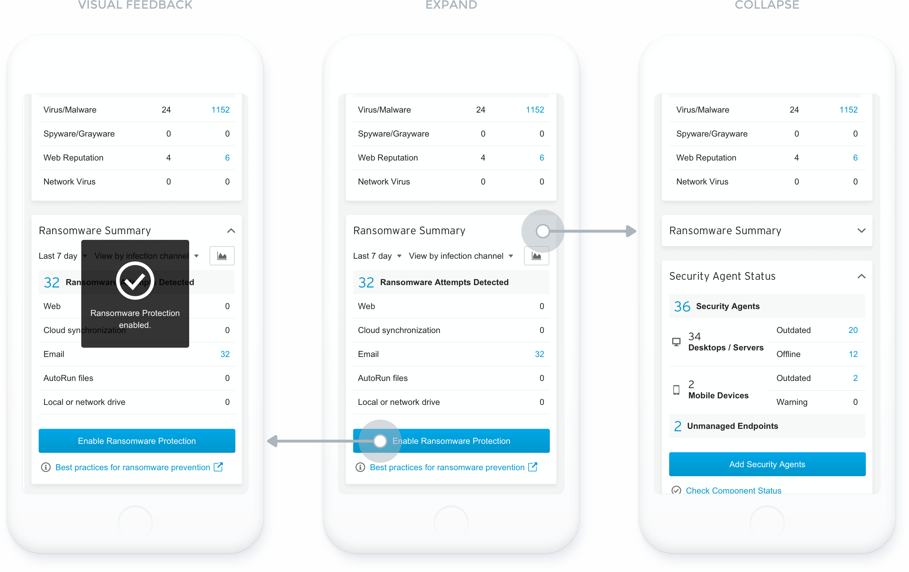
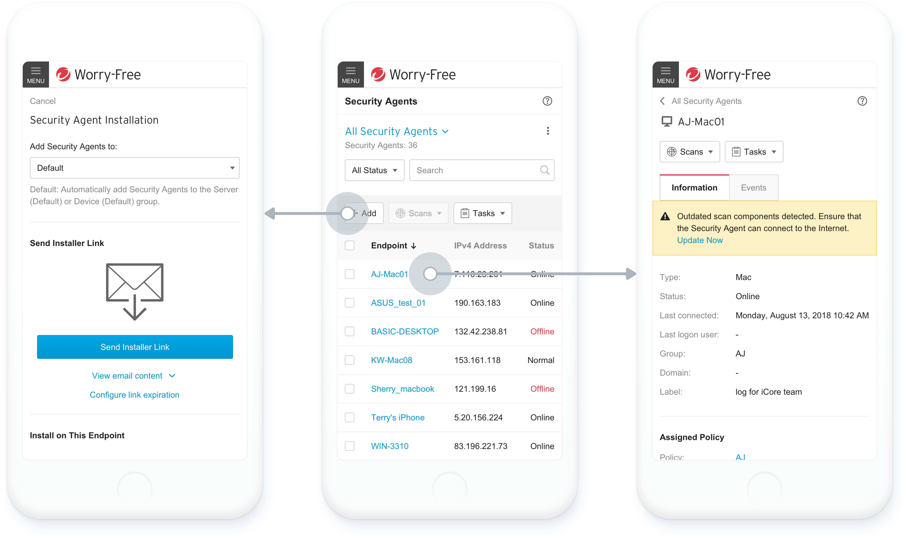
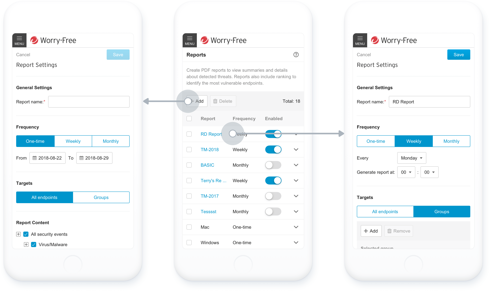

Worry-Free 是一個為中小企業設計的資安 SaaS 產品，但它只有電腦版，並不適合在小螢幕的裝置上操作。當工程師有重要且緊急的任務需要解決、身邊卻沒有電腦時，就必需用手機克難的完成工作。
設計符合手機使用情境的 RWD 版本，開發時程較 APP 短、也不用另外安裝下載。除了維持和電腦版相似的視覺一致性、降低使用者的學習成本，也做了不少設計上的調整以更適應裝置本身。
不像一般的社交軟體盡全力地提升用戶黏著率，我們的目標在於讓使用者能夠快速的進入網站、完成任務、離開網站 (get in, get done, get out)。若要在小尺寸螢幕的裝置上仍然保持高效的生產力，就必須考量使用手機時的行為模式。為了符合使用情境，我做了以下調整：
上述都屬於細微的調整，而這些細節就是讓工作流程更為流暢的關鍵。就如 20 世紀最著名的設計師夫婦檔 Charles Eames 所說 "The details are not the details, they make the design."
響應式網頁 (Responsive Web Design) 是一種網頁開發技術，網頁上的內容會根據裝置的大小變化而有不同的呈現方式。然而響應式網頁的用意並非只是將龐雜的內容「硬塞」在有限的版面空間中，而是要試想使用者在不同情境下的需求，移除不必要的元素、留下核心的功能。
表單填寫採用單欄式 (Single Column) 設計，使用者的視覺動線不易被打斷，一次專注在一個欄位。
 See the prototype Next: Pinkoi Sign up/Sign in